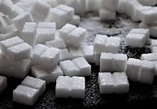
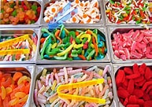
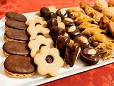

Información sobre el azúcar
Conoce qué es la sacarosa, los tipos de azúcar y algunas características básicas.
Leer informaciónCanLe reúne información sencilla para reflexionar sobre el consumo de azúcar y conocer alternativas para tomar decisiones más conscientes.
Aprender sobre los alimentos y revisar nuestros hábitos puede ser un primer paso para cuidar el bienestar cotidiano.

Conoce qué es la sacarosa, los tipos de azúcar y algunas características básicas.
Leer información
Explora el tema del consumo de productos azucarados desde una perspectiva educativa.
Ver el impacto
Encuentra ideas para reflexionar sobre tus hábitos sin buscar cambios de un día para otro.
Ver consejosCanLe quiere orientar especialmente a adolescentes que desean comprender mejor su alimentación.